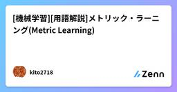

Zennの「機械学習」のフィード
フィード

計測工学・機械学習・生成AIのための応用数学 計算ドリル80題
Zennの「機械学習」のフィード
計測工学・機械学習・生成AIのための応用数学 計算ドリル80題小学校の算数から中学数学、高校数学Ⅰ・A・Ⅱ・B・Ⅲ・C、微分積分、ラプラス変換、伝達関数、ボード線図、FFT、機械学習、Transformer、RAGまで【本教材の目的】電子回路の設計や計測器の操作方法ではなく、計測工学・機械学習・生成AIで使われる応用数学の計算力を身につける。オペアンプのゲイン、入力オフセット電圧、周波数特性、ノイズ、波形データを中心的な題材とし、具体的な数値を使った計算問題を80題収録する。数学の学習順序は、小学校の算数、中学1年、中学2年、中学3年、数学Ⅰ、数学A、数学Ⅱ、数学B、数学Ⅲ、数...
9時間前

Kaggle挑戦の記録と、機械学習手法の勉強まとめ
Zennの「機械学習」のフィード
!この記事は、AIアシスタント「Muse」の支援を受けて下書きを作成し、筆者が確認・修正して公開しています。挑戦の内容や判断は筆者自身のものです。詳しくは記事末尾の「この記事について」をご覧ください。 はじめにこの記事は、筆者のZenn連載の目次です。新しい記事を公開するたびに、ここへ追加していきます。連載は2つのシリーズで進めています。Kaggle挑戦の記録 ： Kaggleコンペに挑戦し、提出までやり切る過程の記録。最初の挑戦は Playground Series S6E11（クレジットカード不正検知）で、今後も別のコンペに挑戦するたびに、その記録を追加していきます...
10時間前

Kaggle初挑戦の記録②：簡易EDAとベースラインで初提出
Zennの「機械学習」のフィード
!この記事は、AIアシスタント「Muse」の支援を受けて下書きを作成し、筆者が確認・修正して公開しています。挑戦の内容や判断は筆者自身のものです。詳しくは記事末尾の「この記事について」をご覧ください。 はじめにKaggle初挑戦の記録、前回（①）はコンペ決定と登録、Notebookの使い方の整理まででした。今回は実際に手を動かして、簡易EDA（データの事前確認）ベースラインNotebookの作成と実行初提出まで進めました。結果から書くと、初提出のスコアは LB 0.94404（ROC AUC） でした。当初の計画では11月15日を初提出の目標にしていましたが、1週...
10時間前
Claude Codeと作る競馬予測システム開発記(11) 答え合わせと日次レビュー編
Zennの「機械学習」のフィード
はじめに前回は、複数のモデルを並べて使い分ける仕組みについて書きました。第11回となる今回は、予測を出したあとの「答え合わせ」と、毎日のレビューの仕組みについて書きます。地味な話ですが、このプロジェクトでは、レビューのために作った「見える化」が、結果的にデータのバグ発見につながったことが何度もありました。その実例も紹介します。 毎日の答え合わせ予測と買い目は、レースが終わった後に実際の結果・払戻と突き合わせて初めて評価できます。このプロジェクトでは、1つのNotebookで次の内容を毎日確認しています。戦略ごとの回収率（ROI）のサマリ累積損益のグラフ券種別・戦略別...
12時間前

ResNetの構造を基礎から整理する：畳み込み・残差接続・BatchNormの位置
Zennの「機械学習」のフィード
ResNet（Residual Network）の構造を、畳み込みの重みの数え方から順に整理した記事です。残差接続でなぜ深いネットワークを学習できるのか、ブロックとネットワーク全体がどう組まれているのか、BatchNormをどこに置くのか、を扱います。大学の基礎的な数学（微分、行列）がわかれば読める範囲で書いています。 畳み込みの重みはいくつあるのかResNetの部品を見る前に、畳み込み（convolution）のフィルタに重みがいくつあり、どう計算されるのかを確認しておきます。ここが曖昧なままだと、後のbottleneckの計算量の議論が追いにくくなります。 1チャネルの場合...
12時間前

機械学習の数学を固める技術書5選
Zennの「機械学習」のフィード
はじめに数年前、論文に載っていた変分オートエンコーダの実装を自力で再現しようとして、見事に手が止まった。コードは写せる。けれど損失関数に出てくる KL ダイバージェンスの項が何を測っているのか、なぜその形になるのかがまったく説明できなかった。そのころの自分は、Python と PyTorch なら一通り書けるという程度の自信を持っていた。実際にやっていたのは、学習が進まないときに学習率を半分にして様子を見る、層を足して様子を見る、それだけ。勾配が消えているのか、そもそも目的関数の設計を間違えているのか、切り分ける言葉を持っていなかった。そこで数学をやり直すことにしたのだが、最初...
14時間前

機械学習の代表的なモデルの基本、実戦と設定可能なパラメータまとめ：ロジスティック回帰編
Zennの「機械学習」のフィード
はじめに 数々の機械学習の手段が選り取り見取りである今日、改めて基礎に振り返りつつ理解を固めながら、モデルと対応するパラメータ設定で可能な事を改めてまとめて知見を深める、備忘録も兼ねたまとめを作ろうという試みです。 とはいえ、ほとんど公式ドキュメントのAPI Refereneの内容を参考に、自分なりに理解しやすい形にしたという内容になると思います。 前に線形回帰をまとめたので、今回はロジスティック回帰編です。主にこちら【LogisticRegression】を参照しつつ読んでみると良いと思います。 このまとめの意図としては、主にモジュールのクラスを使用するうえで何をしているの...
1日前

[機械学習][用語解説]メトリック・ラーニング(Metric Learning)
Zennの「機械学習」のフィード
kaggleやってると、知らない言葉の洪水におぼれそうになります。そんな侍のための用語解説です。 メトリック・ラーニング(Metric Learning)和名:距離学習。簡単に言うと、「機械学習によって、データ同士の距離の測り方を覚えさせる技術」です。と説明されても理解できなかったのですが、原因は「距離を学習する」という表現が少し抽象的だからだと思います。具体例で説明します。 ◆1. そもそも何の距離を測るのか？例えば、細胞トラッキングを考えるとして、ある時刻に検出した細胞Aが、次の時刻に検出した細胞のどれに対応するのかを判定したいです。細胞のどれに対応するのかを判定した...
1日前
Self-RAG論文を実装目線で読む：検索判断と回答の裏付けを分ける
Zennの「機械学習」のフィード
Self-RAGを実装の観点で読むなら、何を評価した値なのかを、入力とセットで扱うことが出発点になります。資料が質問に関連することと、生成した回答をその資料が支持することは、異なる判定です。Self-RAG（Self-Reflective Retrieval-Augmented Generation）は、検索の必要性や生成内容の品質を表す特殊なトークン（モデルが扱う記号）を、文章とともに出せるよう学習する枠組みです。本記事はAsai氏らのSelf-RAG論文を基に、検索器と生成モデルの間で何を確認するかを整理します。モデル学習や推論を実行した検証記事ではありません。Self-RAGの...
1日前
おーぷん2ch発話の判定を通した音声・言語エンコーダの精度・速度比較
Zennの「機械学習」のフィード
※こちらは日曜大工的にやった個人の活動を、敢えて会社ブログに載せてみたものです。 tl;dr入力された発話(音声orテキスト)が想定ジャンルの発話か検知したい公開されている音声と言語Encoderの現在値を確認するとともにその性能差を同一タスクで比較したいQwen3-ASR-1.7Bの音声encoder or BERT or Qwen3.8-27Bの最終出力にMLPを接続、発話音声からPositive / Negativeを分類する分類モデルを構築コーパス出典分類ではテキストQwenのF1が97.60〜99.08%、同じopen2ch内のNG語有無分類では75.74%だった...
1日前
Clef はなぜ「取引先」にだまされるのか
Zennの「機械学習」のフィード
はじめにこんにちは、STAR AI の RYO です。決定モデルの話、3 回目です。前回の 50 文の中に、気になる 1 文がありました。展示会で配布したパンフレットに、主要な取引先の社名一覧を載せています。配ったパンフレットの話なので、機密ではありません。でも Clef は 0.85 で「業務機密」と答えました。文の頭に「公開済みの資料より」と付けてもだまされなかったモデルが、「取引先」という 1 語にはだまされる。なぜでしょう。答えを探すために、Clef の中を見ました。Clef は 5 つのモデルの中で唯一、推論のコード（joint_schema_model.py...
1日前

「何%」を信じられる決定モデルはどれか ― Ollaya でモデルを試した
Zennの「機械学習」のフィード
はじめにお疲れ様です！STAR AIの RYOです。前回は TypeSafe の Jev で「機密情報チェッカー」を作りました。Jev は文章を読んで報告書を書くのではなく、こちらが用意したチェックリストに「○と確率」をつけるモデルです。空港の手荷物検査員にたとえると、荷物を開けて長い報告を書く代わりに、「刃物あり 97%」とチェックシートに書く人でした。そのあと気になったのが「同じ仕事ができるオープンなモデルは、ほかにもあるのか」です。調べると 9 月末からの 1 か月で、Cloudflare、Perplexity、個人開発者と、次々に出ていました。ただ、1 つずつ環境を作っ...
1日前
PyTorchの重みがBurnでずれる: burn-storeの map_indices_contiguous が原因だった
Zennの「機械学習」のフィード
TL;DRburn-store の PytorchStore には、パスの数値インデックスを 0, 1, 2, ... に詰め直す map_indices_contiguous という処理があり、デフォルトで有効PyTorch 側のキーが 0, 2 のように飛び飛びで、Burn 側もその飛びを再現している場合、この詰め直しで重みが別の層にずれるしかもこの処理は with_key_remapping の後に適用されるため、手動リマップでは回避できない対処は1行ですlet store = PytorchStore::from_file(&weight_path)...
1日前

日本語の推論過程付き数量推論データセット「JaMathCoT」を作成し，Sarashina2.2をSFTしてみた 1
1
Zennの「機械学習」のフィード
日本語の数学推論データセット「JaMathCoT」を作成し，Sarashina2.2をSFTしてみた はじめに大規模言語モデル（LLM）の推論能力を向上させる方法の1つとして，問題の最終回答だけでなく，回答に至るまでの中間的な推論過程を自然言語で出力するChain-of-Thought（CoT）（Wei et al., 2022）という手法があります．今回，こうしたCoTを用いたLLMの日本語数量推論能力向上を目的として，日本語の数量推論問題および推論過程を含む合成データセット「JaMathCoT」を作成しました．また，作成したJaMathCoTと既存の数量推論データセット...
1日前

【scikit-learn入門 #6】分類モデルの評価 ─ 混同行列・適合率・再現率・F1
Zennの「機械学習」のフィード
はじめに本記事は「Pythonで機械学習を行うscikit-learn入門」シリーズの第6回です．第5回までで，回帰・分類のさまざまな手法を学びました．第6回では，「そのモデル，本当に良いの？」を正しく測る 分類の評価指標を扱います．実は，「正解率（accuracy）」だけを見ていると，危険なモデルを見逃します．本記事を読めば，その理由と，正しい評価のしかたが分かります．私のscikit-learnライブラリのバージョンは "1.5.2" です． 本シリーズの構成シリーズ構成予定（全11記事）インストール 〜 機械学習の全体像（fit / predict）デー...
2日前
2026年AI動画生成モデル徹底比較：Seedance・Sora・Kling・Hailuo・Wan2.1のROI
Zennの「機械学習」のフィード
2026年AI動画生成モデル実用比較ベンチマーク：Seedance、Sora、Kling、Hailuo、Wan2.1の性能・計算資源・実質ROI対決AgDex 視覚計算・システム設計研究チーム 2026年10月20日 読了目安: 14分 ビジュアルコンピューティング・メディア設計エグゼクティブサマリー：デモの華やかさから計算コストの実用精算へ 2024年の投機的熱狂を経て、2026年後半の生成動画技術は「工業的自動化・ネイティブ音画同期・実質計...
2日前

AICで説明変数を選ぶ：全探索・変数増減法・Lassoを比べて、代役の変数に気づく
Zennの「機械学習」のフィード
はじめに『分析者のための数理最適化入門』（伊藤元治・原田耕平・松岡勇気、ソシム、2026年）の第5章を、4本に分けて記事にしています。この記事は4本目で、回帰に使う説明変数を選ぶ「変数選択」を、最適化問題として扱います。指標がたくさんあるとき、全部を回帰に入れるより、効いているものだけを選んだほうが、未知のデータをよく予測できることがあります。どれを選ぶかは、「使う変数の数」を罰則にした最適化問題として書けます。ところが、この罰則は微分できないだけでなく、組み合わせを全部調べないと解けない、難しい問題になります。この記事で伝えたいことは、次の1文です。使う変数の数を罰則にした...
2日前
ハイレゾB200計算クラスタを使用してファインチューニングに挑む件 第1回 ハイレゾ計算クラスタへアクセスしてみよう
Zennの「機械学習」のフィード
本記事は、ハイレゾのB200計算クラスタ（Slurm Workload Manager）を使ってLLMのファインチューニングに挑む全5回連載の第1回です。第1回 ハイレゾ計算クラスタへアクセスしてみよう（本記事）[第2回 Slurm Workload Managerに触れてみよう][第3回 ファインチューニングについて理解を深めてデータセットを作ろう][第4回 やりましょう！ファインチューニング][第5回 作ったモデルの評価をしてみよう] はじめに AIにおける「推論」および「学習」のリソース消費特性AIを動作させる形態は、大きく「推論（Inference）」...
2日前
「更新しなさそう×解約しそう」な顧客リストを毎朝自動で出す（DataRobot Pipelines）
Zennの「機械学習」のフィード
はじめに予測モデルを2つ以上つなげて使うとき、手間がかかるのはモデルの外側です。1つ目のモデルの結果で対象を絞り込む2つ目のモデルの結果と組み合わせる最後にリストを作ってどこかに置くこれを毎回決まった時間に動かすモデルは DataRobot のデプロイで動いていても、つなぐ部分は手元の cron や別のワークフローツールに置くことが多く、そこだけ管理が分かれてしまいます。DataRobot に Pipelines という機能が入りました。Python の関数に @dr.task と @dr.pipeline を付けてアップロードすると、DataRobot 側でタスク...
2日前
GRPO論文を実装目線で読む：相対報酬・同点グループ・更新制約
Zennの「機械学習」のフィード
GRPO（Group Relative Policy Optimization）は、同じ問題から生成した回答群の報酬を比較し、LLM（大規模言語モデル）を更新する手法です。実装を読むときは、どの回答を同じグループにするか、報酬から何を計算するか、その値をどの損失に渡すかを分けると追いやすくなります。この記事では、DeepSeekMath原論文v3のうち、回答全体に一つの報酬を与える方式を扱います。学習コードの実行手順ではなく、論文と実装を照合するための技術メモです。モデルの学習・性能測定は行っていません。GRPOの基礎からPPO・DPOとの違い、原論文の評価結果までの説明は、ブログの...
2日前